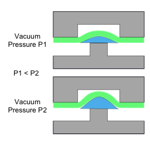
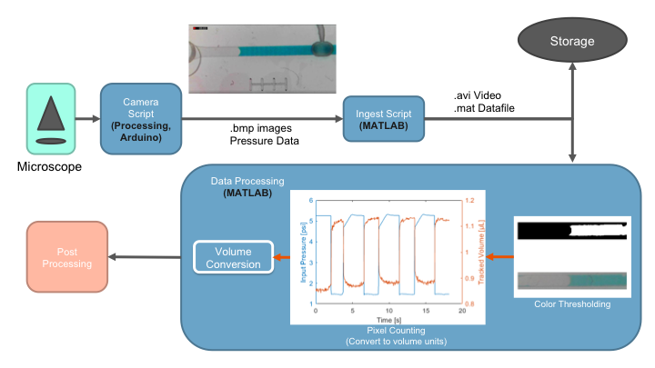

Microfluidics
I worked on microfluidic valves and circuits in the Hui Lab at UC Irvine. I took part in creating a 🔗new valve design for more consistent pumping to make monodisperse droplets. The valve consistency was measured through a 🔗computer vision script made in MATLAB and Processing (programming package). This work contributed to a paper published in Micromachines [Micromachines (2022)].
New Valve Design – Truncated Valve Ceiling
Microfluidic valves operate by applying vacuum pressure to the top side of a chamber, allowing for an elastomer to deform into the chamber. This allows for the flow of liquid in the bottom channel. This operation is very similar to a transistor’s operation. In fact, resistor-transistor logic circuits can be made with these valves, allowing for basic computation.
In the figure below, a ring oscillator is made from 3 of valves and is used to drive a peristaltic microfluidic pump, also made of 3 valves. When a valve is closed, the liquid in the top chamber is pushed out into the connecting channels. Directional pumping is achieved by using surrounding valves to close off one channel.
Figure 1: (Left) Close up of a closed and open microfluidic valve and a schematic of the cross-section. The valve consists of three layers: pneumatic (top layer), elastomer, liquid (bottom layer). A schematic of the peristaltic pumping configuration is shown (right), consisting of a ring oscillator and three pumping valves.
The magnitude of vacuum pressure applied to the valve determines the amount of deflection, and thus the amount of liquid pumped by each valve actuation. A consistent pumping volume is critical in making monodisperse droplets for accurate dosing of solutions. A lowered valve ceiling (among other strategies) can effectively control the volume of liquid pumped by the valve. Essentially, the valve is driven to saturation on each stroke, ensuring a consistent volume.

Figure 2: (Left) Schematic of how the vacuum pressure changes the volume of liquid pumped by a valve. (Right) Plot of a normal valve (450µm depth) and a truncated valve (150µm depth) actuated at different pressures.
Computer Vision Workflow

To measure the small volume of liquid (<1 µL) pumped by these microfluidic valves, a digital microscope was used to record the movement of liquid through a channel as the valve was actuated on and off. The applied pressure on the valve was concurrently recorded. The data acquisition has the following requirements:
· Speed is critical in real time operation. A higher framerate allows more temporal detail to track the volume change over time.
· After recording, storage space is a concern because we would like to save the video streams of many experiments.
Uncompressed .bmp images were saved because the compression from saving as .png or a video format significantly decreased the recording framerate. Although .bmp images take up a lot of space, we only have 1 video stream at a time, so the amount of memory storage is not a concern. The .bmp images were then ingested by a MATLAB script for storage as a .avi file and .mat file to save space.
Color thresholding on each of the video frames was done to find where the liquid is in each frame and the area was integrated to find the volume of liquid in the frame. As the valve is actuated, the liquid in the channel moves left and right, increasing and decreasing the number of “water pixels” are in the frame. This allows us to find the volume of liquid pumped by the valve.